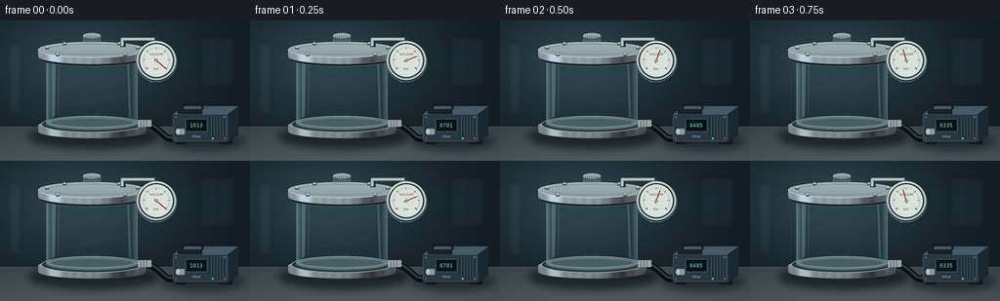
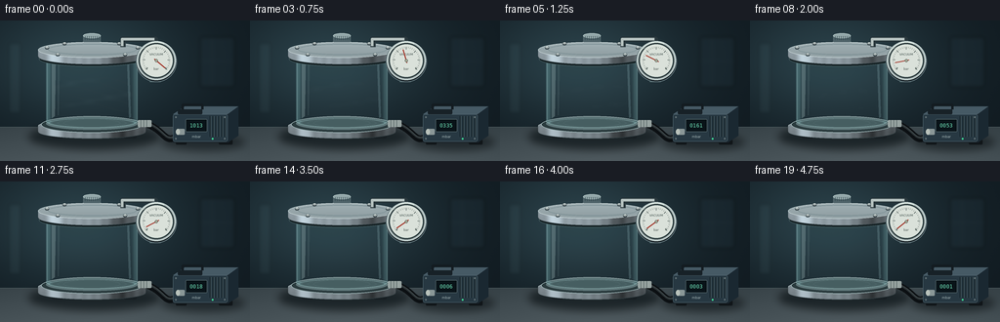

CODING AGENTS AS PIXEL WORLD MODELS
traex/GPT-6.1-Sol · mechanics_0028
点击播放 · 原生 RGB 像素
逐轮保存的候选
回放视频、检查图与代码变化。
每份候选均可单独播放。实际图片检查记录在下方工具轨迹中。
候选 01播放与检查图
点击播放 · 原生 RGB 像素

展开代码变化
--- 上一保存版本
+++ 本次保存版本
@@ -0,0 +1,213 @@
+from pathlib import Path
+import numpy as np
+from PIL import Image, ImageDraw, ImageFont, ImageFilter
+import math
+import artifact_io
+
+ROOT=Path(__file__).resolve().parent
+S=4; W=256; H=144
+rng=np.random.default_rng(7)
+font_path='/usr/share/fonts/truetype/dejavu/DejaVuSans.ttf'
+mono_path='/usr/share/fonts/truetype/dejavu/DejaVuSansMono.ttf'
+def font(n,mono=False): return ImageFont.truetype(mono_path if mono else font_path,round(n*S))
+def box(b): return tuple(round(v*S) for v in b)
+def ellipse(d,b,fill,outline=None,width=1): d.ellipse(box(b),fill=fill,outline=outline,width=round(width*S))
+def rect(d,b,fill,r=0,outline=None,width=1):
+ if r: d.rounded_rectangle(box(b),radius=round(r*S),fill=fill,outline=outline,width=round(width*S))
+ else: d.rectangle(box(b),fill=fill,outline=outline,width=round(width*S))
+def line(d,pts,fill,width=1): d.line([(round(x*S),round(y*S)) for x,y in pts],fill=fill,width=max(1,round(width*S)),joint='curve')
+def poly(d,pts,fill): d.polygon([(round(x*S),round(y*S)) for x,y in pts],fill=fill)
+def text(d,xy,txt,size,color,anchor='mm',mono=False): d.text((round(xy[0]*S),round(xy[1]*S)),txt,font=font(size,mono),fill=color,anchor=anchor)
+
+Y,X=np.mgrid[0:H*S,0:W*S].astype(float); X/=S;Y/=S
+# subdued lab wall and a softly reflective worktop
+wall=np.zeros((H*S,W*S,3),float)
+light=np.exp(-((X-83)/110)**2-((Y-41)/67)**2)
+for c,v in enumerate([17,27,33]): wall[:,:,c]=v+light*[25,37,39][c]
+bench=Y>109
+for c,v in enumerate([51,62,67]): wall[:,:,c]=np.where(bench,v+(Y-109)*.42+12*np.exp(-((X-110)/120)**2),wall[:,:,c])
+wall+=rng.normal(0,.35,wall.shape[:2])[:,:,None]
+background=Image.fromarray(np.clip(wall,0,255).astype(np.uint8),'RGB')
+d=ImageDraw.Draw(background)
+line(d,[(0,109),(256,109)],(80,94,97),.45)
+# distant laboratory detail, very soft and quiet
+bgdetails=Image.new('RGBA',background.size)
+d=ImageDraw.Draw(bgdetails)
+rect(d,(205,17,240,68),(31,48,57,95),2,outline=(70,92,99,60),width=.6)
+line(d,[(217,18),(217,66)],(67,90,96,70),.5)
+line(d,[(205,42),(240,42)],(64,87,97,65),.5)
+rect(d,(9,23,21,95),(88,118,124,30),1)
+background=Image.alpha_composite(background.convert('RGBA'),bgdetails.filter(ImageFilter.GaussianBlur(2*S)))
+
+# Metallic ellipse-ended cylindrical band, shaded continuously across its width.
+def metal_band(im,x0,x1,y0,y1,depth,base=100):
+ mask=Image.new('L',im.size);md=ImageDraw.Draw(mask)
+ rect(md,(x0,y0,x1,y1),255)
+ ellipse(md,(x0,y0-depth,x1,y0+depth),255)
+ ellipse(md,(x0,y1-depth,x1,y1+depth),255)
+ u=(X-x0)/(x1-x0)
+ shine=base+38*np.cos((u-.31)*np.pi)+64*np.exp(-((u-.15)/.065)**2)-51*np.exp(-((u-.76)/.11)**2)
+ shine+=6*np.sin(u*70)+np.random.default_rng(19).normal(0,.65,X.shape)
+ shine+=np.clip((y1-Y)*2,0,18)
+ col=np.stack([shine*.89,shine*.97,shine*1.015],axis=-1)
+ layer=Image.fromarray(np.uint8(np.clip(col,0,255)),'RGB').convert('RGBA')
+ im.paste(layer,(0,0),mask)
+ d=ImageDraw.Draw(im)
+ d.arc(box((x0,y1-depth,x1,y1+depth)),0,180,fill=(55,69,73),width=round(.6*S))
+ d.arc(box((x0,y0-depth,x1,y0+depth)),180,360,fill=(191,207,209),width=round(.5*S))
+ return im
+
+# Reusable static lower scene and chamber interior
+base=background.copy()
+shadow=Image.new('RGBA',base.size);d=ImageDraw.Draw(shadow)
+ellipse(d,(29,106,164,132),(0,7,10,150))
+ellipse(d,(165,116,251,133),(1,7,10,125))
+base=Image.alpha_composite(base,shadow.filter(ImageFilter.GaussianBlur(4*S)))
+d=ImageDraw.Draw(base)
+# feet
+for x in [53,127]:
+ rect(d,(x,115,x+13,121),(24,31,35),2)
+ line(d,[(x+2,116),(x+11,116)],(94,108,111),.8)
+# chamber base plate
+metal_band(base,39,149,108,114,7,base=103)
+d=ImageDraw.Draw(base)
+ellipse(d,(42,98,146,115),(42,58,61),outline=(153,174,176),width=.8)
+ellipse(d,(47,99,141,112),(94,117,120))
+ellipse(d,(50,100,138,110),(68,90,93),outline=(102,130,132),width=.7)
+# subtle circular machined rings on the otherwise empty floor
+for inset in [3,9,15]:
+ d.arc(box((50+inset,100+inset*.065,138-inset,110-inset*.065)),0,360,fill=(86,109,112),width=1)
+# sealed transparent cylindrical volume, no contents
+mask=Image.new('L',base.size);md=ImageDraw.Draw(mask)
+rect(md,(47,38,141,103),255)
+ellipse(md,(47,96,141,110),255)
+ellipse(md,(47,31,141,45),255)
+u=(X-47)/94
+edge=np.exp(-((u-.022)/.034)**2)+.8*np.exp(-((u-.977)/.032)**2)
+a=(10+edge*85).clip(0,140)*np.asarray(mask)/255
+rgba=np.zeros((H*S,W*S,4),np.uint8)
+rgba[:,:,:3]=[127,182,184];rgba[:,:,3]=a.astype(np.uint8)
+base=Image.alpha_composite(base,Image.fromarray(rgba))
+# base flange studs
+for x,y in [(44,111),(63,117),(124,117),(143,111)]:
+ ellipse(d,(x-2,y-1.8,x+2,y+1.8),(36,44,48))
+# A thick bent rubber line connecting outlet to the running pump
+hose=Image.new('RGBA',base.size);d=ImageDraw.Draw(hose)
+pts=[]
+# cubic bezier
+A=np.array([148.,105.]);B=np.array([174.,114.]);C=np.array([166.,132.]);D=np.array([190.,112.])
+for v in np.linspace(0,1,90): pts.append(tuple((1-v)**3*A+3*(1-v)**2*v*B+3*(1-v)*v*v*C+v**3*D))
+line(d,pts,(12,16,19),7)
+line(d,[(x,y-1) for x,y in pts],(45,53,56),2)
+line(d,[(x,y-1.9) for x,y in pts],(77,86,86),.45)
+base=Image.alpha_composite(base,hose)
+d=ImageDraw.Draw(base)
+rect(d,(141,102,155,109),(151,163,161),1)
+for x in [144,147,150]: line(d,[(x,102),(x,109)],(69,83,83),.6)
+# pump feet and industrial housing
+rect(d,(180,122,191,127),(17,22,25),1)
+rect(d,(224,122,238,127),(17,22,25),1)
+poly(d,[(177,96),(189,88),(244,88),(244,118),(233,125),(177,125)],(24,33,39))
+poly(d,[(177,96),(189,88),(244,88),(233,96)],(70,90,101))
+poly(d,[(233,96),(244,88),(244,118),(233,125)],(26,40,49))
+rect(d,(177,96,233,124),(39,56,66),2,outline=(81,102,111),width=.5)
+# motor fins and intake fitting
+for x in range(215,232,3):
+ line(d,[(x,98),(x,119)],(19,32,39),1.1)
+ line(d,[(x+.8,98),(x+.8,119)],(83,100,105),.4)
+rect(d,(182,91,207,96),(23,33,39),1)
+line(d,[(187,91),(187,86),(207,86),(207,91)],(20,28,33),2.4)
+rect(d,(181,111,189,117),(138,151,151),1)
+ellipse(d,(180,111,184,117),(185,194,187))
+rect(d,(190,101,212,114),(9,19,24),1,outline=(92,112,116),width=.5)
+text(d,(201,119),'mbar',3.5,(173,191,191))
+for x,y in [(180,99),(230,99),(180,121),(230,121)]:
+ ellipse(d,(x-.65,y-.65,x+.65,y+.65),(121,136,138))
+ line(d,[(x-.4,y),(x+.4,y)],(25,36,39),.35)
+
+# Static upper hardware and glass highlights (drawn after animated inner air).
+def foreground(im):
+ d=ImageDraw.Draw(im)
+ # glass wall streak reflections
+ glaze=Image.new('RGBA',im.size); gd=ImageDraw.Draw(glaze)
+ poly(gd,[(53,39),(57,39),(56,98),(53,100)],(214,242,240,58))
+ poly(gd,[(59,41),(61,41),(60,97),(59,97)],(202,232,231,21))
+ poly(gd,[(130,41),(132,40),(134,99),(132,100)],(175,219,224,49))
+ line(gd,[(48,41),(48,102)],(185,228,227,108),.6)
+ line(gd,[(140,41),(140,102)],(182,223,222,95),.6)
+ gd.arc(box((47,96,141,110)),0,180,fill=(173,213,212,95),width=round(.65*S))
+ im=Image.alpha_composite(im,glaze)
+ # rubber gasket under tight metal lid
+ d=ImageDraw.Draw(im)
+ ellipse(d,(40,32,148,47),(17,29,32),outline=(82,109,112),width=.6)
+ metal_band(im,39,149,30,37,8,base=125)
+ d=ImageDraw.Draw(im)
+ ellipse(d,(39,22,149,38),(147,163,167),outline=(215,228,228),width=.6)
+ # anisotropic finish across solid lid
+ for yy in np.linspace(23,36,28):
+ delta=(1-((yy-30)/8)**2)**.5 if abs(yy-30)<8 else 0
+ line(d,[(94-53*delta,yy),(94+53*delta,yy)],(int(142+(36-yy)*2),int(156+(36-yy)*2),int(160+(36-yy)*2)),.22)
+ ellipse(d,(49,24,140,35),None,outline=(111,133,138),width=.4)
+ # flange bolts, six restrained silver hexagonal heads
+ for x,y in [(48,28),(66,23.7),(122,23.7),(141,28),(128,35),(59,35)]:
+ poly(d,[(x+2.3*math.cos(a),y+1.65*math.sin(a)) for a in np.arange(6)*math.pi/3],(63,76,81))
+ ellipse(d,(x-1.4,y-1.4,x+1.4,y+.3),(213,222,219))
+ line(d,[(x-.55,y-.5),(x+.55,y-.5)],(81,96,99),.4)
+ # closed valve stem / knurled handle on lid
+ rect(d,(85,15,103,22),(79,99,105),1)
+ ellipse(d,(85,13,103,18),(148,168,170),outline=(188,207,206),width=.4)
+ for x in np.arange(87,102,2): line(d,[(x,16),(x,20)],(44,65,71),.45)
+ # elbow to gauge
+ line(d,[(126,27),(126,19),(159,19),(159,25)],(41,55,60),5.5)
+ line(d,[(125,26),(125,19),(158,19)],(181,193,191),2.8)
+ rect(d,(153,53,165,63),(83,107,112),1)
+ line(d,[(156,56),(163,56)],(191,210,209),.6)
+ # polished analog gauge bezel
+ ellipse(d,(139,21,181,63),(11,20,25),outline=(87,105,111),width=1)
+ ellipse(d,(140,21,180,61),(165,179,179),outline=(210,225,222),width=.7)
+ ellipse(d,(142,23,178,59),(29,42,45))
+ ellipse(d,(143,24,177,58),(218,225,218),outline=(119,140,137),width=.5)
+ for i in range(31):
+ ang=math.radians(140+i*260/30)
+ r=14.1; ri=11.6 if i%5==0 else 12.8
+ line(d,[(160+ri*math.cos(ang),41+ri*math.sin(ang)),(160+r*math.cos(ang),41+r*math.sin(ang))],(49,64,62),.6 if i%5==0 else .3)
+ text(d,(160,34.5),'VACUUM',3.2,(61,77,73))
+ text(d,(160,49.5),'bar',3.2,(72,83,79))
+ text(d,(150,49),'-1',3.1,(44,58,54));text(d,(170,49),'0',3.1,(44,58,54))
+ return im
+
+frames=[]
+for i in range(20):
+ t=i/19
+ p=math.exp(-5.2*t)
+ im=base.copy()
+ # Thin drifting refractive air wisps: evacuate toward lower right outlet.
+ mist=Image.new('RGBA',im.size);d=ImageDraw.Draw(mist)
+ for j in range(6):
+ path=[]
+ for s in np.linspace(0,1,75):
+ x=53+s*83
+ y=58+j*6+3.4*math.sin(s*6.5+j*1.6-t*8)
+ y+=(105-y)*s*s*(.18+.37*t)
+ path.append((x,y))
+ line(d,path,(168,201,204,round(14*p)),2.2)
+ mist=mist.filter(ImageFilter.GaussianBlur(2*S))
+ im=Image.alpha_composite(im,mist)
+ im=foreground(im)
+ d=ImageDraw.Draw(im)
+ # Gauge moves continuously from atmospheric zero to near-full vacuum.
+ angle=math.radians(40-260*(1-p))
+ end=(160+11.8*math.cos(angle),41+11.8*math.sin(angle))
+ line(d,[(160-2.7*math.cos(angle),41-2.7*math.sin(angle)),end],(158,40,28),.9)
+ ellipse(d,(158.5,39.5,161.5,42.5),(76,82,73))
+ ellipse(d,(159,40,161,42),(178,182,161))
+ # front cover reflection, readable through glass
+ d.arc(box((141,22,179,60)),205,295,fill=(228,240,232),width=round(.7*S))
+ line(d,[(146,29),(153,26)],(239,245,236),.35)
+ pressure=max(1,round(1013*math.exp(-7*t)))
+ text(d,(201,107.5),f'{pressure:04d}',5.6,(107,223,181),mono=True)
+ ellipse(d,(216.8,120.2,218.5,121.9),(63,220,151))
+ # restrained final photographic color and antialiasing
+ rgb=im.convert('RGB').resize((W,H),Image.Resampling.LANCZOS)
+ frames.append(np.asarray(rgb,dtype=np.uint8))
+artifact_io.save(np.stack(frames), ROOT)
候选 02播放与检查图
点击播放 · 原生 RGB 像素


展开代码变化
--- 上一保存版本
+++ 本次保存版本
@@ -183,6 +183,7 @@
im=base.copy()
# Thin drifting refractive air wisps: evacuate toward lower right outlet.
mist=Image.new('RGBA',im.size);d=ImageDraw.Draw(mist)
+ rect(d,(49,43,139,102),(170,200,200,round(14*p)))
for j in range(6):
path=[]
for s in np.linspace(0,1,75):
@@ -190,7 +191,7 @@
y=58+j*6+3.4*math.sin(s*6.5+j*1.6-t*8)
y+=(105-y)*s*s*(.18+.37*t)
path.append((x,y))
- line(d,path,(168,201,204,round(14*p)),2.2)
+ line(d,path,(182,215,215,round(38*p)),3.0)
mist=mist.filter(ImageFilter.GaussianBlur(2*S))
im=Image.alpha_composite(im,mist)
im=foreground(im)
候选 03播放与检查图
可观测工具轨迹
实际执行的命令与返回图片。
命令 1exit 0
/bin/bash -lc "ls -la && cat prompt.txt && printf '\\n---RULES---\\n' && cat GENERATION_RULES.md && printf '\\n---SPEC---\\n' && cat task_spec.json"
命令 2exit 0
/bin/bash -lc 'cat artifact_io.py'
命令 3exit 0
/bin/bash -lc 'fc-list | head -8'
命令 4exit 0
/bin/bash -lc "cat > generate.py <<'PY'
from pathlib import Path
import numpy as np
from PIL import Image, ImageDraw, ImageFont, ImageFilter
import math
import artifact_io
ROOT=Path(__file__).resolve().parent
S=4; W=256; H=144
rng=np.random.default_rng(7)
font_path='/usr/share/fonts/truetype/dejavu/DejaVuSans.ttf'
mono_path='/usr/share/fonts/truetype/dejavu/DejaVuSansMono.ttf'
def font(n,mono=False): return ImageFont.truetype(mono_path if mono else font_path,round(n*S))
def box(b): return tuple(round(v*S) for v in b)
def ellipse(d,b,fill,outline=None,width=1): d.ellipse(box(b),fill=fill,outline=outline,width=round(width*S))
def rect(d,b,fill,r=0,outline=None,width=1):
if r: d.rounded_rectangle(box(b),radius=round(r*S),fill=fill,outline=outline,width=round(width*S))
else: d.rectangle(box(b),fill=fill,outline=outline,width=round(width*S))
def line(d,pts,fill,width=1): d.line([(round(x*S),round(y*S)) for x,y in pts],fill=fill,width=max(1,round(width*S)),joint='curve')
def poly(d,pts,fill): d.polygon([(round(x*S),round(y*S)) for x,y in pts],fill=fill)
def text(d,xy,txt,size,color,anchor='mm',mono=False): d.text((round(xy[0]*S),round(xy[1]*S)),txt,font=font(size,mono),fill=color,anchor=anchor)
Y,X=np.mgrid[0:H*S,0:W*S].astype(float); X/=S;Y/=S
# subdued lab wall and a softly reflective worktop
wall=np.zeros((H*S,W*S,3),float)
light=np.exp(-((X-83)/110)**2-((Y-41)/67)**2)
for c,v in enumerate([17,27,33]): wall[:,:,c]=v+light*[25,37,39][c]
bench=Y>109
for c,v in enumerate([51,62,67]): wall[:,:,c]=np.where(bench,v+(Y-109)*.42+12*np.exp(-((X-110)/120)**2),wall[:,:,c])
wall+=rng.normal(0,.35,wall.shape[:2])[:,:,None]
background=Image.fromarray(np.clip(wall,0,255).astype(np.uint8),'RGB')
d=ImageDraw.Draw(background)
line(d,[(0,109),(256,109)],(80,94,97),.45)
# distant laboratory detail, very soft and quiet
bgdetails=Image.new('RGBA',background.size)
d=ImageDraw.Draw(bgdetails)
rect(d,(205,17,240,68),(31,48,57,95),2,outline=(70,92,99,60),width=.6)
line(d,[(217,18),(217,66)],(67,90,96,70),.5)
line(d,[(205,42),(240,42)],(64,87,97,65),.5)
rect(d,(9,23,21,95),(88,118,124,30),1)
background=Image.alpha_composite(background.convert('RGBA'),bgdetails.filter(ImageFilter.GaussianBlur(2*S)))
# Metallic ellipse-ended cylindrical band, shaded continuously across its width.
def metal_band(im,x0,x1,y0,y1,depth,base=100):
mask=Image.new('L',im.size);md=ImageDraw.Draw(mask)
rect(md,(x0,y0,x1,y1),255)
ellipse(md,(x0,y0-depth,x1,y0+depth),255)
ellipse(md,(x0,y1-depth,x1,y1+depth),255)
u=(X-x0)/(x1-x0)
shine=base+38*np.cos((u-.31)*np.pi)+64*np.exp(-((u-.15)/.065)**2)-51*np.exp(-((u-.76)/.11)**2)
shine+=6*np.sin(u*70)+np.random.default_rng(19).normal(0,.65,X.shape)
shine+=np.clip((y1-Y)*2,0,18)
col=np.stack([shine*.89,shine*.97,shine*1.015],axis=-1)
layer=Image.fromarray(np.uint8(np.clip(col,0,255)),'RGB').convert('RGBA')
im.paste(layer,(0,0),mask)
d=ImageDraw.Draw(im)
d.arc(box((x0,y1-depth,x1,y1+depth)),0,180,fill=(55,69,73),width=round(.6*S))
d.arc(box((x0,y0-depth,x1,y0+depth)),180,360,fill=(191,207,209),width=round(.5*S))
return im
# Reusable static lower scene and chamber interior
base=background.copy()
shadow=Image.new('RGBA',base.size);d=ImageDraw.Draw(shadow)
ellipse(d,(29,106,164,132),(0,7,10,150))
ellipse(d,(165,116,251,133),(1,7,10,125))
base=Image.alpha_composite(base,shadow.filter(ImageFilter.GaussianBlur(4*S)))
d=ImageDraw.Draw(base)
# feet
for x in [53,127]:
rect(d,(x,115,x+13,121),(24,31,35),2)
line(d,[(x+2,116),(x+11,116)],(94,108,111),.8)
# chamber base plate
metal_band(base,39,149,108,114,7,base=103)
d=ImageDraw.Draw(base)
ellipse(d,(42,98,146,115),(42,58,61),outline=(153,174,176),width=.8)
ellipse(d,(47,99,141,112),(94,117,120))
ellipse(d,(50,100,138,110),(68,90,93),outline=(102,130,132),width=.7)
# subtle circular machined rings on the otherwise empty floor
for inset in [3,9,15]:
d.arc(box((50+inset,100+inset*.065,138-inset,110-inset*.065)),0,360,fill=(86,109,112),width=1)
# sealed transparent cylindrical volume, no contents
mask=Image.new('L',base.size);md=ImageDraw.Draw(mask)
rect(md,(47,38,141,103),255)
ellipse(md,(47,96,141,110),255)
ellipse(md,(47,31,141,45),255)
u=(X-47)/94
edge=np.exp(-((u-.022)/.034)**2)+.8*np.exp(-((u-.977)/.032)**2)
a=(10+edge*85).clip(0,140)*np.asarray(mask)/255
rgba=np.zeros((H*S,W*S,4),np.uint8)
rgba[:,:,:3]=[127,182,184];rgba[:,:,3]=a.astype(np.uint8)
base=Image.alpha_composite(base,Image.fromarray(rgba))
# base flange studs
for x,y in [(44,111),(63,117),(124,117),(143,111)]:
ellipse(d,(x-2,y-1.8,x+2,y+1.8),(36,44,48))
# A thick bent rubber line connecting outlet to the running pump
hose=Image.new('RGBA',base.size);d=ImageDraw.Draw(hose)
pts=[]
# cubic bezier
A=np.array([148.,105.]);B=np.array([174.,114.]);C=np.array([166.,132.]);D=np.array([190.,112.])
for v in np.linspace(0,1,90): pts.append(tuple((1-v)**3*A+3*(1-v)**2*v*B+3*(1-v)*v*v*C+v**3*D))
line(d,pts,(12,16,19),7)
line(d,[(x,y-1) for x,y in pts],(45,53,56),2)
line(d,[(x,y-1.9) for x,y in pts],(77,86,86),.45)
base=Image.alpha_composite(base,hose)
d=ImageDraw.Draw(base)
rect(d,(141,102,155,109),(151,163,161),1)
for x in [144,147,150]: line(d,[(x,102),(x,109)],(69,83,83),.6)
# pump feet and industrial housing
rect(d,(180,122,191,127),(17,22,25),1)
rect(d,(224,122,238,127),(17,22,25),1)
poly(d,[(177,96),(189,88),(244,88),(244,118),(233,125),(177,125)],(24,33,39))
poly(d,[(177,96),(189,88),(244,88),(233,96)],(70,90,101))
poly(d,[(233,96),(244,88),(244,118),(233,125)],(26,40,49))
rect(d,(177,96,233,124),(39,56,66),2,outline=(81,102,111),width=.5)
# motor fins and intake fitting
for x in range(215,232,3):
line(d,[(x,98),(x,119)],(19,32,39),1.1)
line(d,[(x+.8,98),(x+.8,119)],(83,100,105),.4)
rect(d,(182,91,207,96),(23,33,39),1)
line(d,[(187,91),(187,86),(207,86),(207,91)],(20,28,33),2.4)
rect(d,(181,111,189,117),(138,151,151),1)
ellipse(d,(180,111,184,117),(185,194,187))
rect(d,(190,101,212,114),(9,19,24),1,outline=(92,112,116),width=.5)
text(d,(201,119),'mbar',3.5,(173,191,191))
for x,y in [(180,99),(230,99),(180,121),(230,121)]:
ellipse(d,(x-.65,y-.65,x+.65,y+.65),(121,136,138))
line(d,[(x-.4,y),(x+.4,y)],(25,36,39),.35)
# Static upper hardware and glass highlights (drawn after animated inner air).
def foreground(im):
d=ImageDraw.Draw(im)
# glass wall streak reflections
glaze=Image.new('RGBA',im.size); gd=ImageDraw.Draw(glaze)
poly(gd,[(53,39),(57,39),(56,98),(53,100)],(214,242,240,58))
poly(gd,[(59,41),(61,41),(60,97),(59,97)],(202,232,231,21))
poly(gd,[(130,41),(132,40),(134,99),(132,100)],(175,219,224,49))
line(gd,[(48,41),(48,102)],(185,228,227,108),.6)
line(gd,[(140,41),(140,102)],(182,223,222,95),.6)
gd.arc(box((47,96,141,110)),0,180,fill=(173,213,212,95),width=round(.65*S))
im=Image.alpha_composite(im,glaze)
# rubber gasket under tight metal lid
d=ImageDraw.Draw(im)
ellipse(d,(40,32,148,47),(17,29,32),outline=(82,109,112),width=.6)
metal_band(im,39,149,30,37,8,base=125)
d=ImageDraw.Draw(im)
ellipse(d,(39,22,149,38),(147,163,167),outline=(215,228,228),width=.6)
# anisotropic finish across solid lid
for yy in np.linspace(23,36,28):
delta=(1-((yy-30)/8)**2)**.5 if abs(yy-30)<8 else 0
line(d,[(94-53*delta,yy),(94+53*delta,yy)],(int(142+(36-yy)*2),int(156+(36-yy)*2),int(160+(36-yy)*2)),.22)
ellipse(d,(49,24,140,35),None,outline=(111,133,138),width=.4)
# flange bolts, six restrained silver hexagonal heads
for x,y in [(48,28),(66,23.7),(122,23.7),(141,28),(128,35),(59,35)]:
poly(d,[(x+2.3*math.cos(a),y+1.65*math.sin(a)) for a in np.arange(6)*math.pi/3],(63,76,81))
ellipse(d,(x-1.4,y-1.4,x+1.4,y+.3),(213,222,219))
line(d,[(x-.55,y-.5),(x+.55,y-.5)],(81,96,99),.4)
# closed valve stem / knurled handle on lid
rect(d,(85,15,103,22),(79,99,105),1)
ellipse(d,(85,13,103,18),(148,168,170),outline=(188,207,206),width=.4)
for x in np.arange(87,102,2): line(d,[(x,16),(x,20)],(44,65,71),.45)
# elbow to gauge
line(d,[(126,27),(126,19),(159,19),(159,25)],(41,55,60),5.5)
line(d,[(125,26),(125,19),(158,19)],(181,193,191),2.8)
rect(d,(153,53,165,63),(83,107,112),1)
line(d,[(156,56),(163,56)],(191,210,209),.6)
# polished analog gauge bezel
ellipse(d,(139,21,181,63),(11,20,25),outline=(87,105,111),width=1)
ellipse(d,(140,21,180,61),(165,179,179),outline=(210,225,222),width=.7)
ellipse(d,(142,23,178,59),(29,42,45))
ellipse(d,(143,24,177,58),(218,225,218),outline=(119,140,137),width=.5)
for i in range(31):
ang=math.radians(140+i*260/30)
r=14.1; ri=11.6 if i%5==0 else 12.8
line(d,[(160+ri*math.cos(ang),41+ri*math.sin(ang)),(160+r*math.cos(ang),41+r*math.sin(ang))],(49,64,62),.6 if i%5==0 else .3)
text(d,(160,34.5),'VACUUM',3.2,(61,77,73))
text(d,(160,49.5),'bar',3.2,(72,83,79))
text(d,(150,49),'-1',3.1,(44,58,54));text(d,(170,49),'0',3.1,(44,58,54))
return im
frames=[]
for i in range(20):
t=i/19
p=math.exp(-5.2*t)
im=base.copy()
# Thin drifting refractive air wisps: evacuate toward lower right outlet.
mist=Image.new('RGBA',im.size);d=ImageDraw.Draw(mist)
for j in range(6):
path=[]
for s in np.linspace(0,1,75):
x=53+s*83
y=58+j*6+3.4*math.sin(s*6.5+j*1.6-t*8)
y+=(105-y)*s*s*(.18+.37*t)
path.append((x,y))
line(d,path,(168,201,204,round(14*p)),2.2)
mist=mist.filter(ImageFilter.GaussianBlur(2*S))
im=Image.alpha_composite(im,mist)
im=foreground(im)
d=ImageDraw.Draw(im)
# Gauge moves continuously from atmospheric zero to near-full vacuum.
angle=math.radians(40-260*(1-p))
end=(160+11.8*math.cos(angle),41+11.8*math.sin(angle))
line(d,[(160-2.7*math.cos(angle),41-2.7*math.sin(angle)),end],(158,40,28),.9)
ellipse(d,(158.5,39.5,161.5,42.5),(76,82,73))
ellipse(d,(159,40,161,42),(178,182,161))
# front cover reflection, readable through glass
d.arc(box((141,22,179,60)),205,295,fill=(228,240,232),width=round(.7*S))
line(d,[(146,29),(153,26)],(239,245,236),.35)
pressure=max(1,round(1013*math.exp(-7*t)))
text(d,(201,107.5),f'{pressure:04d}',5.6,(107,223,181),mono=True)
ellipse(d,(216.8,120.2,218.5,121.9),(63,220,151))
# restrained final photographic color and antialiasing
rgb=im.convert('RGB').resize((W,H),Image.Resampling.LANCZOS)
frames.append(np.asarray(rgb,dtype=np.uint8))
artifact_io.save(np.stack(frames), ROOT)
PY
python generate.py"命令 5exit 0
/bin/bash -lc "python - <<'PY'
p='generate.py'
s=open(p).read()
s=s.replace(\"mist=Image.new('RGBA',im.size);d=ImageDraw.Draw(mist)\\n for j\", \"mist=Image.new('RGBA',im.size);d=ImageDraw.Draw(mist)\\n rect(d,(49,43,139,102),(170,200,200,round(14*p)))\\n for j\")
s=s.replace(\"(168,201,204,round(14*p)),2.2)\",\"(182,215,215,round(38*p)),3.0)\")
open(p,'w').write(s)
PY
python generate.py
ls -lh pixels.npz index.html inspection.png && python - <<'PY'
from PIL import Image
import numpy as np
from pathlib import Path
frames=list(Path('frames').glob('*.png'))
assert len(frames)==20
assert all(Image.open(p).size==(256,144) and Image.open(p).mode=='RGB' for p in frames)
z=np.load('pixels.npz');print('Verified:',len(frames),'RGB frames;',z['pixels'].shape)
PY"视觉工具实际返回图片 1

保存候选 3 份；完成命令 5 次；可验证图片返回 1 张。原始 API 响应与完整日志保留在本地。